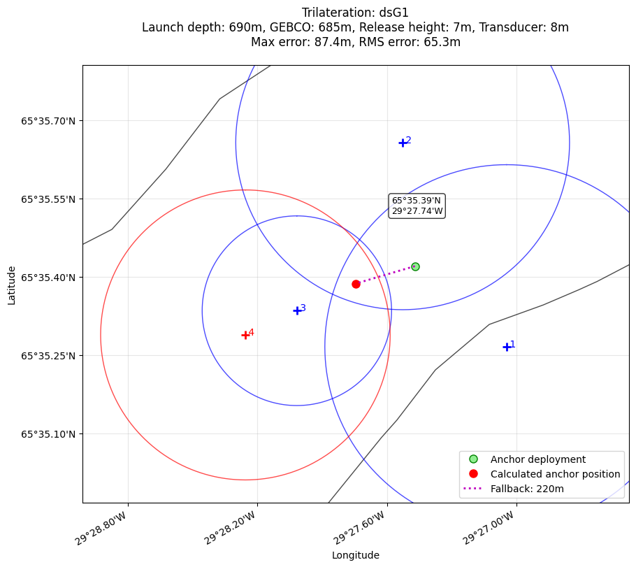

Demo notebook snippet for manual trilateration input.
[5]:
# Import the trilateration package
from trilatmoor import solve_anchor_position, dec2deg
from datetime import datetime
[6]:
# Survey positions and ranges
# Format: [latitude_degrees, latitude_minutes, longitude_degrees, longitude_minutes, range_meters]
[7]:
# Survey parameters
release_height = 7 # Height of acoustic release above seafloor (m)
transducer_depth = 7.7 # Depth of ship's transducer below surface (m)
# Location name
# Survey positions and ranges
# Format: [latitude_degrees, latitude_minutes, longitude_degrees,
# Sound speed (m/s) - adjust for your area
true_sound_speed = 1490 # Use 1495 for FC3, 1503 for most other sites
water_depth_anchor_launch = 690 # Water depth at anchor deployment (m)
loc_name = "dsG1"
survey_data = [
# Anchor deployment (range = 0)
[65, 35.42, -29, -27.47, 0],
# Position fixes with acoustic ranges
[65, 35.2656, -29, -27.0447, 936], # Fix 1
[65, 35.6567, -29, -27.5268, 900], # Fix 2
[65, 35.3346, -29, -28.0173, 755], # Fix 3
[65, 35.2882, -29, -28.2560, 850], # Fix 4
]
# =============================================================================
# PROCESSING SECTION - No need to edit below this line
# =============================================================================
def convert_to_decimal_degrees(deg, min_val):
"""Convert degrees and decimal minutes to decimal degrees."""
return deg + min_val / 60
def convert_from_decimal_degrees(decimal_degrees):
"""Convert decimal degrees back to degrees and decimal minutes."""
abs_val = abs(decimal_degrees)
degrees = int(abs_val)
minutes = (abs_val - degrees) * 60
return degrees, minutes
# Convert survey data to the format expected by solve_anchor_position
latitudes = []
longitudes = []
ranges = []
print(f"Processing survey data for {loc_name}:")
# print("-" * 50)
for i, (lat_deg, lat_min, lon_deg, lon_min, range_val) in enumerate(survey_data):
# Convert to decimal degrees
lat_decimal = convert_to_decimal_degrees(lat_deg, lat_min)
lon_decimal = convert_to_decimal_degrees(lon_deg, lon_min)
latitudes.append(lat_decimal)
longitudes.append(lon_decimal)
ranges.append(range_val)
if range_val == 0:
print(
f"Deployment: {lat_decimal:.5f}°N, {lon_decimal:.5f}°W ({lat_deg}°{lat_min:.2f}'N, {abs(lon_deg)}°{abs(lon_min):.2f}'W)"
)
else:
print(
f"Fix {i}: {lat_decimal:.5f}°N, {lon_decimal:.5f}°W ({lat_deg}°{lat_min:.2f}'N, {abs(lon_deg)}°{abs(lon_min):.2f}'W) - Range: {range_val}m"
)
# Create triangulation data structure
triang_data = {
"loc_name": loc_name,
"release_height": release_height,
"transducer_depth": transducer_depth,
"water_depth_anchor_launch": water_depth_anchor_launch,
"times": [datetime.now()] * len(ranges), # Dummy times
"ranges": ranges,
"latitudes": latitudes,
"longitudes": longitudes,
}
print("\nSurvey parameters:")
print(f" Water depth: {water_depth_anchor_launch}m")
print(f" Release height: {release_height}m")
print(f" Transducer depth: {transducer_depth}m")
print(f" Sound speed: {true_sound_speed}m/s")
# Solve for anchor position
print("\nSolving trilateration...")
solution = solve_anchor_position(triang_data, true_sound_speed=true_sound_speed)
# Display results
print("\n" + "=" * 60)
print(f"ANCHOR POSITION RESULTS FOR {loc_name}")
print("=" * 60)
anchor_lat = solution["anchor_lat"]
anchor_lon = solution["anchor_lon"]
print(f"Decimal degrees: {anchor_lat:.6f}°N, {anchor_lon:.6f}°W")
# Convert to degrees/minutes format
_, _, lat_str = dec2deg(anchor_lat)
_, _, lon_str = dec2deg(abs(anchor_lon))
print(f"Degrees/minutes: {lat_str}N, {lon_str}W")
print("\nQuality metrics:")
print(f" Fallback distance: {solution['fallback_distance']:.0f} m")
print(f" Max residual error: {solution['max_residual']:.1f} m")
print(f" RMS residual error: {solution['rms_residual']:.1f} m")
print("\nIndividual fix residuals:")
for i, residual in enumerate(solution["residuals"]):
print(f" Fix {i + 1}: {residual:.1f} m")
# Check survey quality
if solution["rms_residual"] < 10:
quality = "Excellent"
elif solution["rms_residual"] < 50:
quality = "Good"
elif solution["rms_residual"] < 100:
quality = "Fair"
else:
quality = "Poor"
print(f"\nSurvey quality: {quality}")
print("=" * 60)
Processing survey data for dsG1:
Deployment: 65.59033°N, -29.45783°W (65°35.42'N, 29°27.47'W)
Fix 1: 65.58776°N, -29.45075°W (65°35.27'N, 29°27.04'W) - Range: 936m
Fix 2: 65.59428°N, -29.45878°W (65°35.66'N, 29°27.53'W) - Range: 900m
Fix 3: 65.58891°N, -29.46695°W (65°35.33'N, 29°28.02'W) - Range: 755m
Fix 4: 65.58814°N, -29.47093°W (65°35.29'N, 29°28.26'W) - Range: 850m
Survey parameters:
Water depth: 690m
Release height: 7m
Transducer depth: 7.7m
Sound speed: 1490m/s
Solving trilateration...
============================================================
ANCHOR POSITION RESULTS FOR dsG1
============================================================
Decimal degrees: 65.589775°N, -29.462412°W
Degrees/minutes: 65°35.39'N, 29°27.74'W
Quality metrics:
Fallback distance: 220 m
Max residual error: 87.4 m
RMS residual error: 65.3 m
Individual fix residuals:
Fix 1: 49.5 m
Fix 2: 50.1 m
Fix 3: 87.4 m
Fix 4: 66.8 m
Survey quality: Fair
============================================================
[8]:
from trilatmoor import plot_trilateration_survey
import matplotlib.pyplot as plt
bathymetry_path = "../../cruiseplan/data/bathymetry/GEBCO_2025.nc"
fig = plot_trilateration_survey(triang_data, solution, bathymetry=bathymetry_path)
plt.show()
